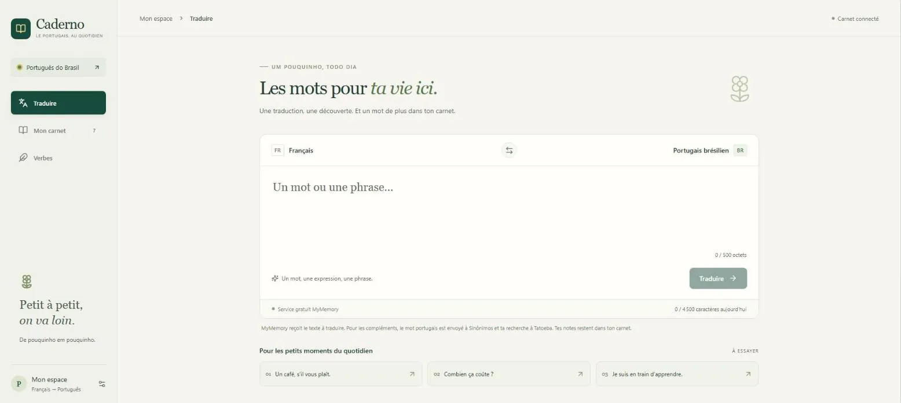
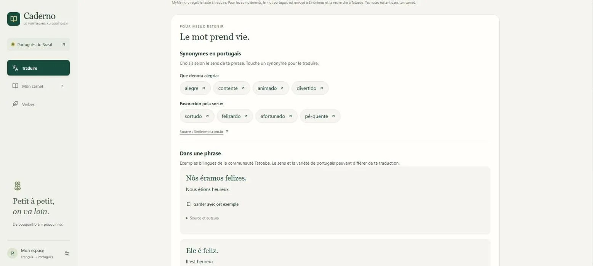
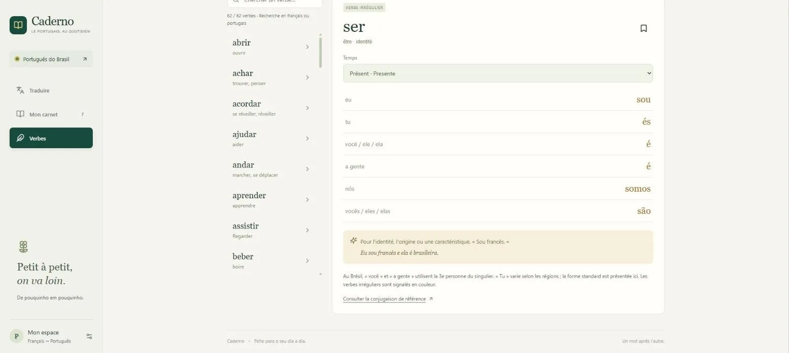

Projet personnel, application installable sur téléphone, construite en pilotant un agent IA
Caderno : un carnet de portugais brésilien qui tient dans la poche
J'apprends le portugais brésilien. Je voulais un seul endroit pour traduire un mot, le garder avec un vrai exemple et réviser mes conjugaisons, sur téléphone comme sur ordinateur, même sans réseau. J'ai conçu Caderno et je l'ai fait construire par un agent de code IA en une journée, jusqu'à sa mise en ligne sur mon serveur.
Le besoin et les contraintes
Un traducteur donne un mot, mais pas l'envie de le retenir. Il me fallait un carnet personnel qui garde chaque mot avec son sens, un exemple et mes notes, et des tableaux de conjugaison fiables. Trois contraintes ont guidé le cahier des charges :
- Gratuit. Pas d'abonnement : la traduction passe par le service gratuit MyMemory, limité à 5 000 caractères par jour. Caderno s'impose une limite plus prudente de 4 500 caractères et garde en mémoire les traductions déjà faites, qui ne consomment rien.
- Des données qui restent à moi. Seul le texte à traduire part vers le service ; les notes, exemples et fiches restent sur mon serveur.
- Utilisable partout. L'application s'installe sur iPhone et se consulte hors connexion : le carnet et les conjugaisons restent lisibles sans réseau.
Ce que fait l'application

- Traduire du français vers le portugais brésilien et inversement.
- Comprendre le mot : synonymes regroupés par sens et exemples bilingues, avec leur source et leurs auteurs.
- Garder le mot dans son carnet avec l'exemple choisi, le retrouver par une recherche sans accents et le réviser en cartes.
- Conjuguer 60 verbes du quotidien à quatre temps, et ajouter ses propres verbes, dont les formes sont récupérées sur une conjugaison de référence.
- Sauvegarder son carnet dans un fichier et le réimporter sans écraser les fiches existantes.


Comment je l'ai fait construire
Le vibe coding ne remplace pas la rigueur, il la déplace. Je n'ai pas écrit le code, mais j'ai fixé ce qu'il devait faire, ce qu'il ne devait pas faire, et comment prouver que c'était fait.
- Un cahier des charges précis : fonctions, limites du service gratuit, données envoyées à l'extérieur, comportement hors connexion.
- Une vérification à chaque version, consignée dans un journal : compilation, tests, captures sur ordinateur et sur téléphone.
- Un audit du parcours et du code, dont sept constats ont été corrigés : contraste des textes, taille des boutons sur téléphone, données hors connexion mal formées, résultats périmés.
- Une mise en ligne prudente sur un serveur qui héberge déjà d'autres applications : dossier, conteneur et port séparés, et vérification que les autres répondent toujours.
Résultats vérifiables
- Compté765 formes verbales vérifiées une à une sur la conjugaison de référence.
- Compté26 tests automatiques réussis : 11 sur les données et l'API, 14 parcours dans un navigateur (Chromium, et WebKit au format iPhone), 1 test de lecture hors connexion.
- ConstatéEn ligne en HTTPS depuis le 10 octobre 2026 ; les deux autres applications du serveur répondent toujours.
- ConstatéAccès par mot de passe, cookie de session protégé, contrôle de l'origine des requêtes et limite de tentatives de connexion. Audit des dépendances : aucune vulnérabilité signalée.
Limites connues
- Des services gratuits. Ils peuvent être indisponibles, et un mot rare peut n'avoir ni synonyme ni exemple.
- Des exemples à vérifier. Toutes les phrases d'exemple ne sont pas en portugais du Brésil ; chaque exemple garde un lien vers sa source.
- L'iPhone réel. Les tests simulent un iPhone ; l'installation sur un vrai appareil n'est pas couverte par les tests automatiques.